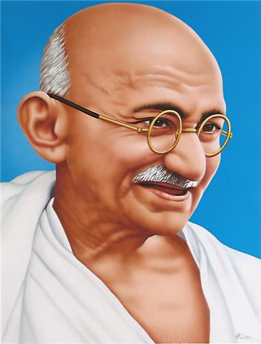
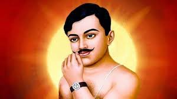
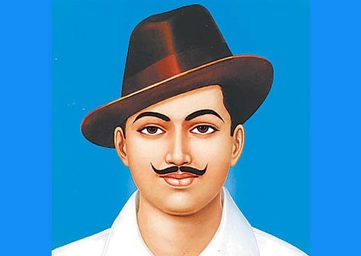
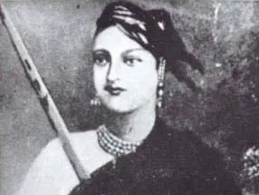
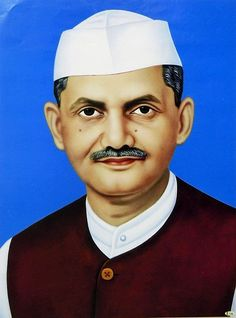
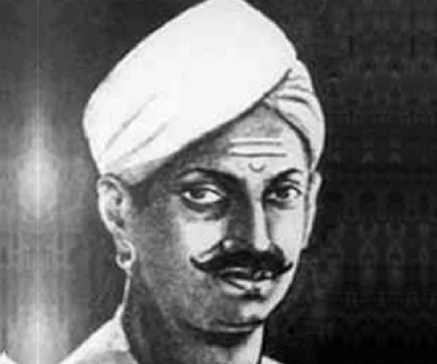
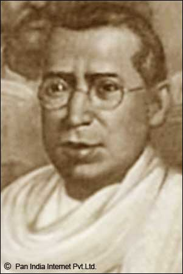
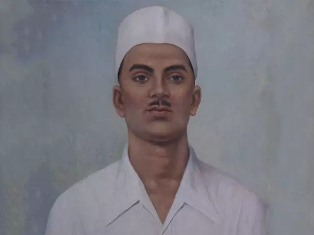
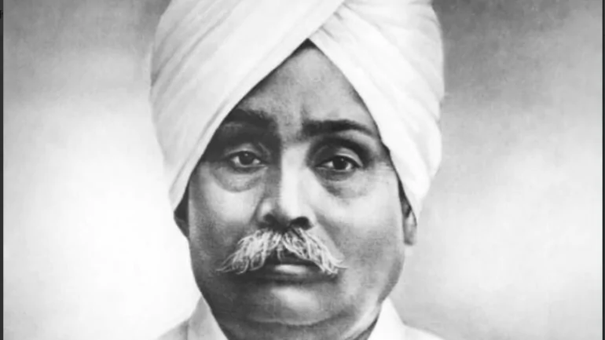

FREEDOM FIGHTER AND SOCIAL FORMER FROM 1857 TO 1947!
1.MAHATMA GANDHI

MAHATMA GANDHI
Mohandas Karamchand Gandhi ( 2 October 1869 – 30
January
1948), commonly known as Bapu, was an Indian lawyer,
anti-colonial nationalist and political ethicist
who
employed nonviolent resistance to lead the
successful
campaign for India's independence from British rule
and
to later inspire movements for civil rights and
freedom
across the world. The honorific prefix Mahātmā
(Sanskrit: "great-souled", "venerable"), first
applied
to him in 1914 in South Africa, is now used
throughout
the world.
Born and raised in a Hindu family in coastal
Gujarat,
Gandhi trained in the law at the Inner Temple,
London,
and was called to the bar at age 22 in June 1891.
After
two uncertain years in India, where he was unable to
start a successful law practice, he moved to South
Africa in 1893 to represent an Indian merchant in a
lawsuit. He went on to live in South Africa for 21
years. It was here that Gandhi raised a family and
first
employed nonviolent resistance in a campaign for
civil
rights. In 1915, aged 45, he returned to India and
soon
set about organising peasants, farmers, and urban
labourers to protest against excessive land-tax and
discrimination.
Assuming leadership of the Indian National Congress
in
1921, Gandhi led nationwide campaigns for easing
poverty, expanding women's rights, building
religious
and ethnic amity, ending untouchability, and, above
all,
achieving swaraj or self-rule.[11] Gandhi adopted
the
short dhoti woven with hand-spun yarn as a mark of
identification with India's rural poor. He began to
live
in a self-sufficient residential community, to eat
simple food, and undertake long fasts as a means of
both
introspection and political protest. Bringing
anti-colonial nationalism to the common Indians,
Gandhi
led them in challenging the British-imposed salt tax
with the 400 km (250 mi) Dandi Salt March in 1930
and in
calling for the British to quit India in 1942. He
was
imprisoned many times and for many years in both
South
Africa and India.
2.CH. AZAD

CH. AZAD
Chandra Shekhar Azad was one of the formidable
freedom fighters of the British Empire. This
Chandra Shekhar Azad essay will tell you about
his early life and achievements as a freedom
fighter. You will come to know what he has done
and how he sacrificed his life for our country
in this essay on Chandra Shekhar Azad. This
essay has been written in a simple language for
the understanding of all students.We got our
freedom due to the sacrifice of our freedom
fighters and nationalists. They have fought
relentlessly against the colonial rule of the
British Empire. One of the greatest martyrs of
Indian Independence is Chandra Shekhar Azad. He
was an ardent nationalist and the real son of
Mother India who had no fear of any superpower.
His bravery will always be remembered and
printed in India’s history of freedom fights. In
this essay on Chandra Shekhar Azad, we will
discuss his early life and revolutionary
activities.
His name was Chandra Shekhar Tiwari. He was born
on 23rd July 1906 in Bhavra, Jhabua District,
Madhya Pradesh. He belonged to a poor family.
Chandra grew up with the Bhil tribal kids and
indulged in sports. He was extremely fit and
possessed an athletic figure. His mother dreamed
of making him a Sanskrit scholar and sent him to
Kashi Vidyapeeth in Banaras. It was then he was
introduced to nationalism. He grew extreme love
for her country and became a freedom fighter.
He was extremely troubled by the Jallianwala
Bagh incident in 1919. He was just 13 years old
when he joined the Non-Cooperation Movement
launched by Mahatma Gandhi in 1920. He actively
participated in such movements and was arrested
by the British Government when he was 16 years
old. It was then he introduced himself to the
police as Azad and his father as ‘Swatantra’.
The magistrate, witnessing such courage, became
furious and ordered him to be whiplashed. We can
understand from this Chandra Shekhar Azad essay
paragraph how fearless he was.
The Noncooperation Movement was withdrawn by
Mahatma Gandhi in 1922. His nationalist
sentiment and the dream of seeing his country to
be free received a huge blow. He became more
aggressive and understood that non-violent
movements like this will not shake the British
Empire’s pillars.
3. KUNWAR SINGH

KUNWAR SINGH
Kunwar Singh was born on 13 November 1777 to
Maharaja Shahabzada Singh and Maharani
Panchratan Devi, in Jagdispur of the
Shahabad (now Bhojpur) District, in the
state of Bihar. He belonged to the Ujjainiya
Rajput clan. A British judicial officer
offered a description of Kunwar Singh and
described him as "a tall man, about six feet
in height". He went on to describe him as
having a broad face with an aquiline nose.
In terms of his hobbies, British officials
describe him as being a keen huntsman who
also enjoyed horse-riding.
After his father's death in 1826, Kunwar
Singh became the taluqdar of Jagdispur. His
brothers inherited some villages however a
dispute arose as to their exact allocation.
This dispute was eventually settled and the
brothers seemingly returned to having
cordial relations.
He married the daughter of Raja Fateh
Naraiyan Singh, a wealthy zamindar of the
Deo Raj estate in Gaya district who belonged
to the Sisodia clan of Rajputs
4. BHAGAT SINGH

BHAGAT SINGH
Bhagat Singh is popular for his heroic
and revolutionary acts. He was born in a
family that was fully involved in the
struggle for Indian Independence. His
father, Sardar Kishan Singh, and uncle,
Sardar Ajit Singh both were popular
freedom fighters of that time. Both were
known to support the Gandhian ideology.
They always inspired the people to come
out in masses to oppose the British.
This affected Bhagat Singh deeply.
Therefore, loyalty towards the country
and the desire to free it from the
clutches of the British were inborn in
Bhagat Singh. It was running in his
blood and veins.
5.LAXSHMI BAI

LAXSHMI BAI
Rani of Jhansi or Rani Lakshmi Bai’s
maiden was Manu Bai. Manu Bai or
Manikarnika was born to Moropant
Tambe and Bhagirathi Tambe on 19th
November 1828 at Kashi (Varanasi).
At the small age of about 3-4 years,
she lost her mother and was thus,
brought up by her father alone.
After the death of her mother, Manu
Bai and her father shifted to
Bithoor and started living with
Peshwa Baji Rao.
Since childhood, Manu was inclined
towards the use of weapons. She thus
learned horse-riding, sword
fighting, and martial arts and
mastered these. She was a beautiful,
intelligent and brave girl. Manu
spent her childhood in the company
of Nana Sahib, the son of Peshwa
Baji Rao II. She had great courage
and presence of mind which she
proved once while saving Nana Sahib
from getting crushed by the horse’s
feet.
In May 1842, Manu got married to
Raja Gangadhar Rao Newalkar,
Maharaja of Jhansi, and was now
known as Rani Lakshmi Bai. In 1851,
she gave birth to Damodar Rao who
died when he was just 4 months old.
Thus, in 1853, Gangadhar Rao adopted
a child and named him after his son,
Damodar Rao. But, unfortunately,
Gangadhar Rao died soon due to
illness and Lord Dalhousie, the then
Governor-General of India denied
this adoption.
6.LAL BAHADUR SHASTRI

LAL BAHADUR SHASTRI
Lal Bahadur Shastri was born on
2nd October 1904 at Mughal Sarai
in Uttar Pradesh in India. His
father’s name was Sharda Prasad
and he was a school teacher. His
mother’s name was Ramdulari
Devi. Lal Bahadur Shastri’s
father died when he was only one
year old. He has two sisters.
After his father’s death, his
mother Ramdulari Devi took him
and his two sisters to her
father’s house and settled down
there.Since childhood, Lal
Bahadur Shastri was very honest
and laborious. Lal Bahadur
Shastri was graduated with a
first-class degree from the
Kashi Vidyapeeth in 1926 then he
was given the title Shastri
Scholar. Lal Bahadur Shastri
acquired virtues like boldness,
love of adventure, patience,
self-control, courtesy, and
selflessness in his childhood.
In order to participate actively
in the freedom movement, Lal
Bahadur Shastri compromised even
with his studies.
Lal Bahadur Shastri got married
to Lalita Devi. And both Lal
Bahadur Shastri and his wife
blessed with 6 children. The
name of their children was
Kusum, Hari Krishna, Suman,
Anil, Sunil, and Ashok.
7.MANGAL PANDEY

MANGAL PANDEY
Mangal Pandey, (born July
19, 1827, Akbarpur,
India—died April 8, 1857,
Barrackpore), Indian soldier
whose attack on British
officers on March 29, 1857,
was the first major incident
of what came to be known as
the Indian, or Sepoy, Mutiny
(in India the uprising is
often called the First War
of Independence or other
similar names).
Pandey was born in a town
near Faizabad in what is now
eastern Uttar Pradesh state
in northern India, although
some give his birth place as
a small village near
Lalitpur (in present-day
southwestern Uttar Pradesh).
He was from a high-caste
Brahman landowning family
that professed strong Hindu
beliefs. Pandey joined the
army of the British East
India Company in 1849, some
accounts suggesting that he
was recruited by a brigade
that marched past him. He
was made a soldier (sepoy)
in the 6th Company of the
34th Bengal Native Infantry,
which included a large
number of Brahmans. Pandey
was ambitious and viewed his
profession as a sepoy as a
stepping-stone to future
success.
8.BIPIN CHANDRA PAL

BIPIN CHANDRA PAL
Bipin Chandra Pal was
born in the village of
Poil, Habiganj, Sylhet
District, Bengal
Presidency of British
India, in a Hindu
Bengali Kayastha family.
His father was
Ramchandra Pal, a
Persian scholar, and
small landowner. He
studied and taught at
the Church Mission
Society College (now the
St. Paul's Cathedral
Mission College), an
affiliated college of
the University of
Calcutta. He also
studied comparative
theology for a year at
new Manchester College,
Oxford in England but
did not finish the
course. His son was
Niranjan Pal, one of the
founders of Bombay
Talkies. One son-in-law
was the ICS officer, S.
K. Dey, who later became
a union minister. His
other son-in-law was
freedom fighter Ullaskar
Dutta who married Lila
Dutta his childhood love
interest after many
circumstances at their
last age.
Family of Bipin Chandra
Pal Son - Niranjan Pal
(founder of Bombay
Takies) Grandson- Colin
Pal (writer of Shooting
Star) film director
Great Grandson - Deep
Pal (Steadicam
camerawork). As
revolutionary as he was
in politics, Pal was the
same in his private
life. After his first
wife died he married a
widow and joined the
Brahmo Samaj.
9.SUKHDEV

SUKHDEV
Sukhdev had seen
cruel atrocities
which the royal
British Raj had done
on India. Seeing
these atrocities,
Sukhdev joined the
revolutionary
organization. They
vowed to free India
from the bonds of
British domination.
Sukhdev, along with
his fellow Bhagat
Singh and Shivram
Rajguru, was
arrested in 1928 for
the assassination of
Deputy
Superintendent
Saunders, he took
revenge for Lalaji's
death by killing
Saundar. After the
Central Assembly
Hall bombings in New
Delhi on April 8,
1929, Sukhdev and
his associates were
arrested for their
crimes and sentenced
to death as a
verdict. Sukhdev
took active part in
revolutionary
activities like
"hunger strike" in
jail in 1929, which
shook the foundation
of British
government.
On March 23, 1931,
three brave
revolutionaries
Bhagat Singh,
Sukhdev Thapar and
Shivram Rajguru were
hanged in Lahore's
Central Jail and
their bodies were
burnt secretly by
the British on the
banks of river
Sutlej. Although the
punishment was
against all the
hanging norms.
Sukhdev was only 23
when he was martyred
for his country.
10.LAL LAJPAT RAI

LALA LAJPAT RAI
Lala Lajpat Rai
was a known
freedom fighter
who sacrificed
his life for the
freedom of the
country from
British rule. He
was born on 28th
January 1865 in
Ferozepur
district. His
father’s name
was Munshi Radha
Krishna Azad and
his mother’s
name was Gulab
Devi. He
completed his
schooling from
Rewari and
practised law in
Lahore. He got
married to Radha
Devi in 1877 and
in 1892 he
attended his
first high court
session in
Lahore. After
some years he
went to the USA
and found Indian
Home Rule League
of America. In
Punjab, he
supported the
Non-Cooperation
Movement and
because of the
lathi charge, he
died on the
scene on
November 17th,
1928. With all
the sacrifices
and hard work he
did for his
country, he is
still known as
the Lion of
Punjab and his
sacrifices
inspired others
to join the
movement of
independence.